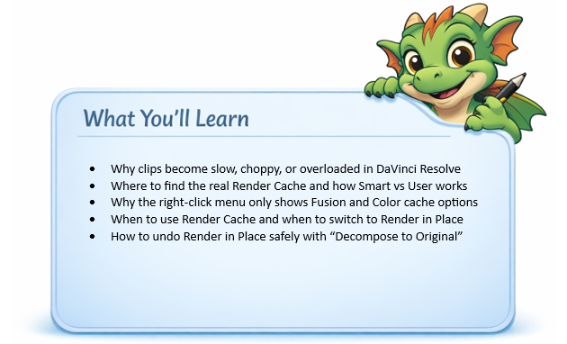
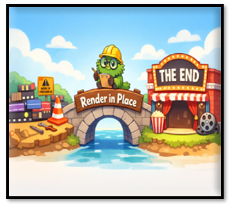
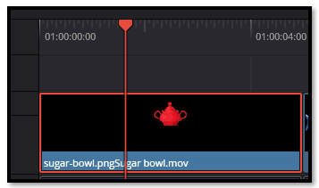
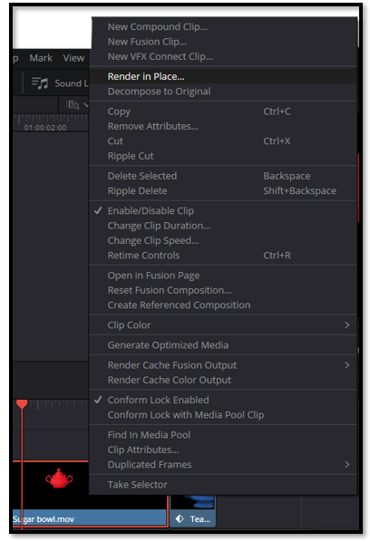
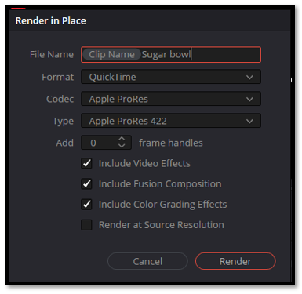
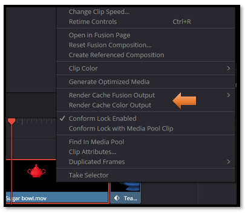
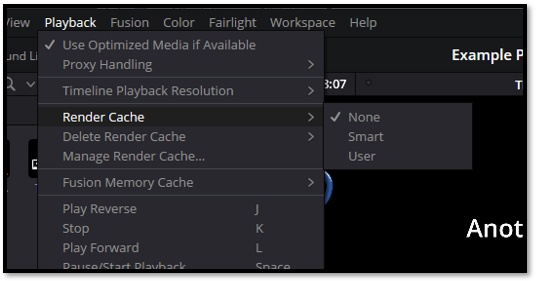
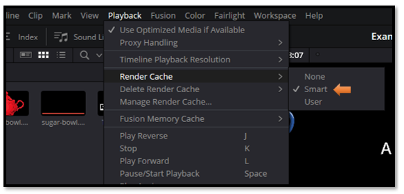

~11 How to Fix Slow or Choppy Clips in DaVinci Resolve Using Render in Place~
8/10/2026

The image here gives some insight, a messy bloated movie clip. We use render in place, and now you have a sleek, fast moving movie clip in the end.

Why Render in Place?
When a clip has too many effects, transitions, Fusion nodes, speed changes, or color corrections stacked on top of each other, Resolve has to calculate all of that live during playback. That’s when you get stuttering, freezing, or missing frames.
Render in Place turns your complicated, heavy clip into a temporary, self‑contained video file. Resolve no longer has to calculate everything live — it just plays the rendered file smoothly.
DaVinci added Render in Place as a practical middle‑ground solution for editors who were getting bogged down by heavy, effect‑loaded clips. People needed a way to relieve the excess processing bloat without exporting an entire project or committing to a final render. They weren’t done editing — they just needed a quick, efficient way to lock in a complex section, fix the performance issue, and keep moving forward smoothly.
How do I Render in Place?
We actually went over this in our last tutorial, but here it is for you again.

Right click on the clip of the sugar bowl on the timeline. Choose to Render in Place.

In this next image, you will see what the dialog box looks like for this. Give the clip a name, and use Apple Quicktime. This format works best for a clip that is being rendered right on the timeline. Remember to hit the Render button, to render this clip in place.

It might want you to give the folder that it chooses to save this in, a little click. Before it will start to render. Just select it default folder.
After it renders, test that new rendered clip, and see if it works any better. It should be running smoothly now with the effects baked into it.
If it is a nested timeline,
Then copy that rendered clip and place it on your outer, main timeline.
You can disable, or archive the broken decomposed/non-working version.
When not to Render in Place
If you’re still actively editing a clip, you don’t want to Render in Place yet — that locks the clip and forces you to undo it if you need changes. But what if the clip is already so heavy that editing becomes painful? Resolve actually gives you a middle‑ground before Render in Place: Render Cache. With Smart or User Cache enabled, Resolve quietly pre‑renders the complex parts in the background while still keeping everything editable. It’s the perfect “workable zone” when you’re not ready to bake the clip, but you can’t stand the lag anymore.

Is there a Simple Render Cache?
Yes — DaVinci Resolve does have a simple, global Render Cache, but it isn’t located in the right‑click menu. The clip‑level menu only shows cache options for Fusion and Color, because those engines handle the heavy processing. The general Render Cache lives in a different place.
To access it, go to:
Top Menu → Playback → Render Cache
Here you’ll see three options:
None
Smart
User

By default, Resolve sets this to None, which means nothing is cached unless you force it. If your timeline starts to feel sluggish, switching to Smart can help. Smart Cache automatically watches for heavy effects and pre‑renders them in the background so playback stays smooth.

However…
Watch it- Smart Cache can sometimes be a little over‑eager. If you notice it constantly clearing and rebuilding cache files — especially on complex projects — you may prefer switching to User or even back to None for full manual control.
Render in Place may look like a simple right‑click option, but as you’ve seen, it sits at the end of a whole chain of performance tools inside DaVinci Resolve. When your clips become overloaded, when caching isn’t enough, or when the timeline slows to a crawl, Render in Place gives you a clean, stable version of your work so you can keep editing without frustration. Understanding how Resolve handles heavy clips — from Smart Cache to Fusion and Color caching, all the way to Render in Place — gives you the confidence to diagnose slowdowns and choose the right fix at the right time. Now you know exactly what’s happening, why it happens, and how to take control of it.